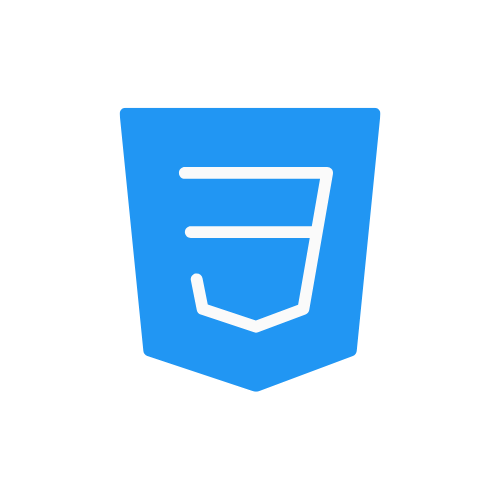

Bonjour, je m'appelle Miradi et je suis
Web Designer UI & UX
Mon objectif est de permettre aux entrepreneurs et PME locales de se digitaliser efficacement, en leur offrant des solutions accessibles, professionnelles et adaptées au contexte congolais.




Apropos de moi
En tant que développeur front-end, je maîtrise les technologies HTML, CSS et JavaScript, me permettant de créer des interfaces esthétiques, intuitives, modernes digne de votre entreprise et entièrement responsives. Je possède également des connaissances en marketing digital ainsi qu'en Python pour le développement back-end, mais mon expertise et ma préférence restent concentrées sur le front-end et l’expérience utilisateur.